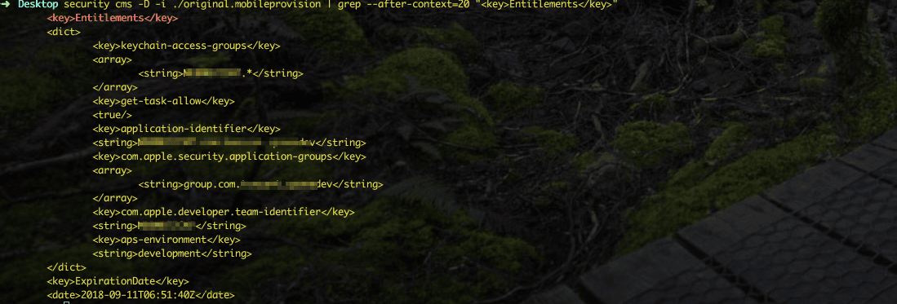
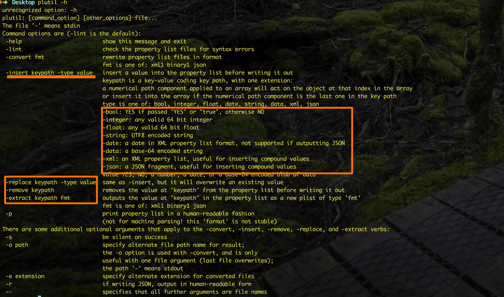

背景是写一个自动签名的脚本, 真的是从0到1的踩坑记, 其中需要对.provision文件进行签名信息截取, 并生成.plist文件
method_ONE
内容截取并保存临时文件中
先看看.provision文字长什么样子, 我截取了其中一部分展示的信息,其中我们要的内容是从dict到dict之间

1
security cms -D -i ./original.mobileprovision | grep --after-context=20 "Entitlements" > /tmp/tmp\_provision
读取匹配的信息,并保存到/tmp/tmp_provision这个文件中
python进行正则匹配,过滤dict之后的内容
1
provision=\`python -c "from re import findall,compile,S;data=open('/tmp/tmp\_provision','r').read();print findall(compile(r'.\*',S),data)\[0\];"\`
最后重定向到一个.plist文件中
1
echo ''$provision'' > Entitlements.plist
这个方法虽然可以, 但是其中第三部, 必须要格外注意字符的使用, 不然就格式不对,导致重定向出来的无法识别为.plist
method_TWO
重定向为一个.plist
1
security cms -D -i ./original.mobileprovision > ProvisionProfile.plist
查看到全部的信息, 重定向为一个ProvisionProfile.plist,还没有过滤
提取内容生成
1
/usr/libexec/PlistBuddy -x -c "Print Entitlements" ProvisionProfile.plist > Entitlements.plist
直接将里面的子项Entitlements拿出来,生成一个新的Entitlements.plist
这个方法比上面的稳妥不知道多少倍, 但是第一个的方法是自己钻研
.plist文件的增删改查

1
2
3
plutil -p ./ProvisionProfile.plist #查看
plutil -insert Insert -string "insert data here" ./ProvisionProfile.plist #增
plutil -replace Insert -string "change data here" ./ProvisionProfile.plist #替换
列举的就诸如此类,plutil是一个.plist官方推荐的好工具